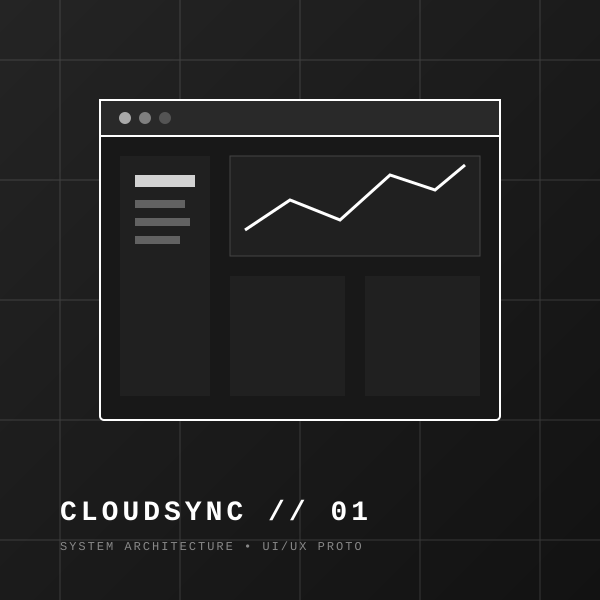
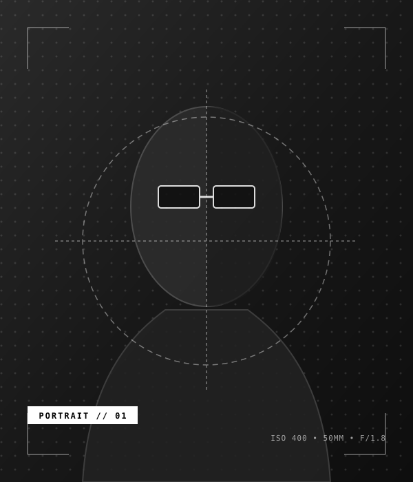

PRODUCT DESIGN

CLOUDSYNC SUITE
DIGITAL PRODUCT DESIGN • 2025
I enjoy taking ideas from a digital space and turning them into tangible objects through parametric modelling, 3D printing, and hands-on making.
Designer with a background in 3D art, currently working in product design. Drawn to understanding how things are made, experimenting with materials, and learning new skills to bring ideas to life.


End-to-end design taking ideas from discovery and user research to wireframing, ergonomics, functional UI/UX, and physical prototyping. Bridging digital functionality with intuitive real-world interaction.
3D environment modelling, parametric geometry, and digital asset creation. Designing clean, manufacturable CAD and mesh structures optimized for both real-time digital rendering and physical fabrication.
Turning digital files into physical objects through rapid prototyping, slicing optimization, FDM/resin printing, and testing how materials respond in real physical environments.
Exploring textiles, crocheting plushies, woodworking, and electronics. Combining traditional tactile craft with modern digital workflows to build meaningful, multi-material artifacts.
I'm a designer with a background in 3D art, currently working in product design. I enjoy taking ideas from a digital space and turning them into tangible objects through parametric modelling, 3D printing, and hands-on making.
I'm drawn to understanding how things are made, experimenting with materials, and learning new skills that let me bring my ideas to life.
Why I make: From designing functional products to crocheting plushies, modelling 3D environments, and exploring new ways to make things, I'm interested in the many ways ideas can take physical form. I want to expand beyond digital tools and explore fabrication, electronics, textiles, and woodworking. For me, making is as much about experimenting, solving problems, and learning through doing as it is about the final result.
I have a foundation in 3D art and visual modelling, and I currently work in product design. My focus lies at the intersection of parametric 3D modelling, digital fabrication, and hands-on making.
On the digital side: 3D modelling and CAD software, parametric design tools, and product design suites. On the physical side: 3D printing (FDM/resin), crochet, textiles, woodworking, and rapid prototyping materials.
I begin with exploratory modelling and parametric adjustments, then translate models into physical prototypes through 3D printing and material testing to evaluate scale, ergonomics, and tactile feeling.
For me, making is as much about experimenting, solving problems, and learning through doing as it is about the final result. I love expanding beyond screen boundaries into fabrication, electronics, and craft.
Yes! I'm always eager to collaborate on product design projects, 3D modelling commissions, physical installations, and experimental fabrication ideas.